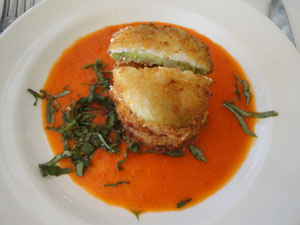

Fried Green Tomatoes
This recipe is one of our most popular brunch dishes. It is based on a traditional southern fried green tomato recipe with an upscale twist in the addition of goat cheese. We serve them on a pool of marinara sauce, garnished with chopped basil.
Ingredients:
- ¼ t kosher salt
- ¼ t freshly ground pepper
- ¼ t sugar
- 1 cup finely crushed crackers
- 1 egg
- ½ cup goat cheese
- 4 large green tomatoes, sliced
- Vegetable oil
Directions:
Combine the first four ingredients in a shallow bowl. Beat the egg until frothy in a smaller bowl. To assemble: spread a small amount of goat cheese on the top side of one tomato slice; dip the tomato in the egg, then roll both sides in the cracker crumbs. Place on waxed paper until ready to fry.
Heat the oil in a cast-iron skillet, and then fry the tomatoes about 3 minutes on each side or until brown. Drain on paper towels and serve.